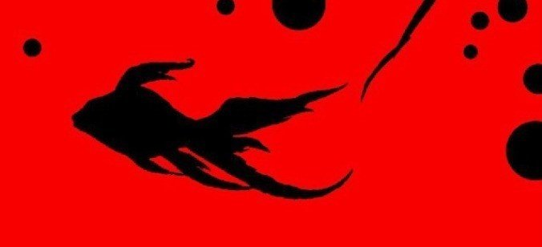

ふと思うことがある。
人間はなんて感情の起伏が激しい動物なのかと。沈んでいるかと思いきや、翌朝目を覚ますと何事もなかったかのように、朝飯を食べ外に出て行く。その夜には何かいいことがあったのか、口笛なんか吹いている。
そんな様子を見ていると「人間も落ち着きのないやつらだな」と思う。
時々人間は不思議な文字盤を見て、慌てたりする。それが何を表しているかは分からないが、その文字盤らしき針が上と下を同時に指し示すと飼い主は餌をくれる。それも毎回。だから、ここから逃げ出そうと考えたことはない。
毎晩遅く帰ってくる飼い主は、大泣きしながらこちらを見てくる。
「なんで何もかもうまくいかないんだよ……」
そう呟くと、水槽越しに私の身体を指でなぞる。そうしたまま飼い主は眠りについた。
だらしのないやつだ。何泣くことがあるのだ。仕事のことなのかプライベートなことなのかは分からないが、自分は自分、他人は他人だろ。そう割り切らないと身が持たないぞ。
そう言いたいところだが、私の小さすぎる口では伝わるはずもない。
窓の方を見ると雨粒がひっついている。お前が泣くから空も泣いているじゃないか。
そんな日々が続き、いつしか飼い主は仕事に出かけることもなくなっていた。徐々に髪や髭も伸びていき、私は熊にでも飼われているかのように思えた。
頼むから風呂くらい入ってくれ。そう思っていると、飼い主はぞろぞろとこちらに寄ってきた。
「俺は仕事や他人に縛られて生きていたくないんだ。だから今はこうして、これからの生き方を考えている」
無気力な表情で話す様子に私は怒りを覚えたが、とりあえず今は飼い主が何を考えているか知ることができてよかったと思うことにしよう。
なるほど、確かに世のしがらみに嫌になるのはよく分かる。この世界はやり切れないことばかりだ。だが、引きこもっていても何の意味もないだろう。
「金魚に言っても仕方がないか」
そう言うと、飼い主はまたベッドに吸い込まれていった。
ある日の昼過ぎ、家に女がやってきた。私が飼われて以来、こんなことは初めてのことだった。どうやら飼い主の知り合いのようだ。いつの間にか飼い主の髪と髭は小綺麗に整えられていた。
その女は私の存在に気づくと駆け寄ってきて「金魚飼ってるんだ」と言った。
「一応オスだから、ジャックスっていうんだ」
おいおい、初めて聞いたぞ。そんなださい名前を勝手につけるな。
私には名前なんかいらない。何にも縛られず、自由に泳いでいたいのだ。
飼い主は完全に女に見惚れている。おいおい、何デレデレしてるんだ。まったく、若い女となるといつもこうだ。
そう思いながら会話に耳を澄ましていると、二人は仲睦まじく昔の思い出話に花を咲かせていた。久しぶりに飼い主の笑った顔を見た。
でも、人間はそう簡単に幸せを手に入れることはできないようだ。
女が帰った夜、飼い主は「財布がない……」と言いながら家を駆けずり回っていた。頭を抱えて顔も真っ青だ。
ほどなくして飼い主は誰かに電話をかけた。何かを話している。飼い主はまた目に涙を浮かべている。
「好きだったのに……もう誰も信用できない」
その表情から察するに、どうやら昼間の女にすられたのだろう。
だらしがないうえにまぬけなのか。私は呆れかえってしまった。もう知らない。いくらすり寄ってきても、私には何もできない。それくらいお前にも分かるだろ。
すると、飼い主はなにやら紐を天井にかけ、自分の首をその輪の中に入れようとしていた。
おい、待て！ ここで先に死ぬのは反則だぞ！ お前がいなくなると私も餓死するではないか！ でも私には何もできない。まずい、このままでは。
その時、運命はこの人間にかかっていることを思い知った。どんな人間であろうと、この男は私の飼い主であることに変わりない。
私は思い切って水槽の上の方まで昇り息を止め、自分の運命を賭けた。そして、私は初めて水槽の上空を舞い上がった。